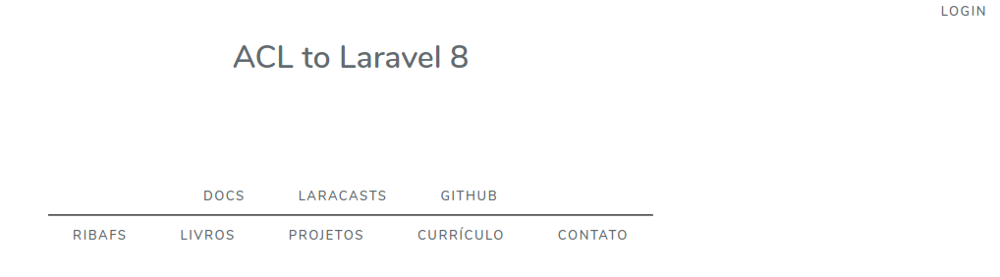
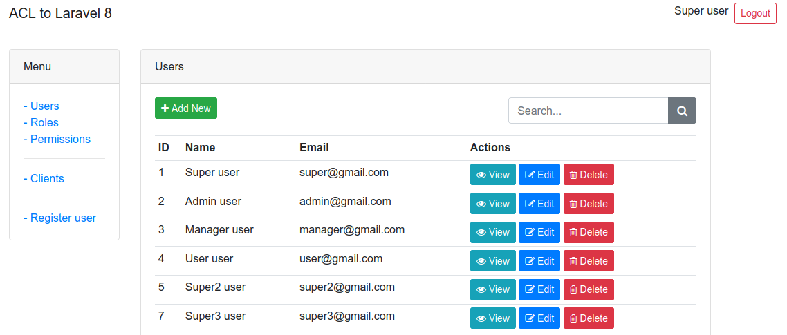
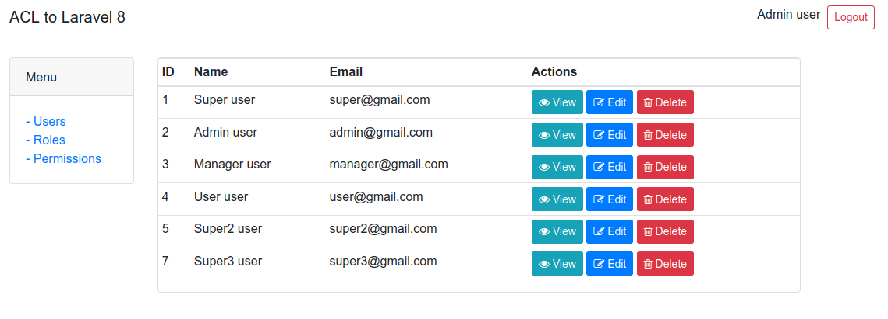
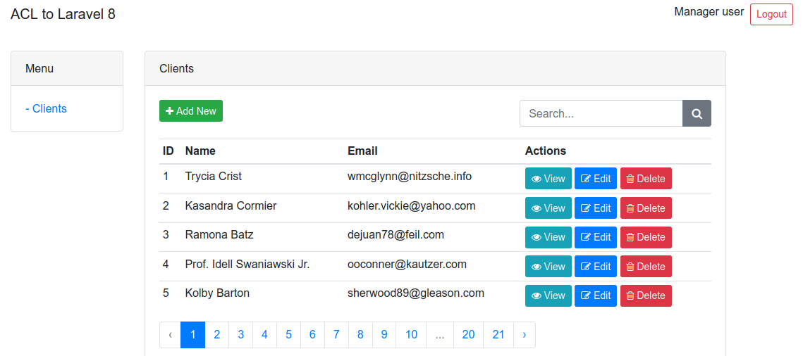
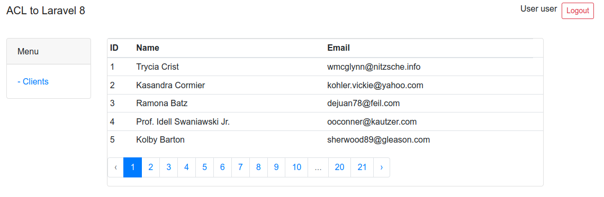

Introdução
Projeto de implementação de ACL em aplicativos do Laravel 8 from Scratch
Usando Users, Roles, Permissions, Provider, Middleware, Trait, Gates, etc
Seção Inicial
Objetivos deste projeto
Sei que existem vários e ótimos pacotes com a mesma finalidade deste para laravel, como o spatie permissions, o laravel-admin, o laravue, o laratrust e outros mais. Este são pacotes são criados por profissioonais com grande experiência com laravel e por conta disso algumas vezes vem com um código meio complexo. Mas eu estave querendo aprender a fazer eu mesmo, ter o máximo controle possível, usar apenas os recursos nativos do laravel e criar de forma simples, sempre que possível. E o resultado está aqui para você avaliar. Adianto que gostei muito da experiencia e do resultado e que aprendi bastante também com a criação deste projeto.
O controle de acesso (ACL) de aplicativos é algo importante, especialmente em grandes aplicativos.
Críticas, sugestões (issues), pull requests, forkes e colaborações e colaboradores serão muito bem vindos
Observação: este projeto é fruto de várias pesquisas pela internet e de alguns experimentos meus
Conta com duas versões - ribafs/laravel-acl - para o laravel 8 - ribafs/laravel7-acl - para o laravel 7
Planejamento inicial
Teremos as seguintes tabelas principais
1 2 3 4 | |
Teremos os seguintes usuários
1 2 3 4 | |
As roles
1 2 3 4 | |
As permissões
1 2 3 4 5 6 7 | |
Tabelas pivô
As roles e permissions serão atribuidas aos usuários via código e não diretamente. Elas serão armazenadas nas tabelas pivô: - user_role - user_permission - role_permission
Tela inicial dos 4 usuários
Tela welcome

User super

User admin

User manager

User user
